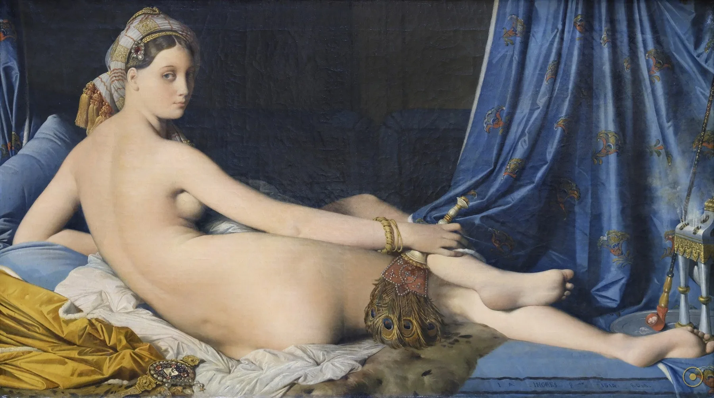
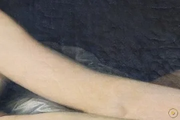
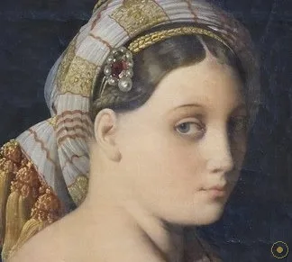
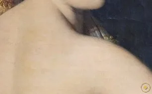
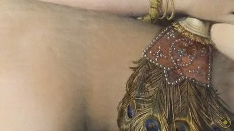
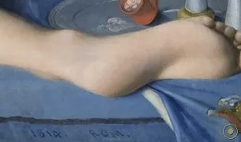
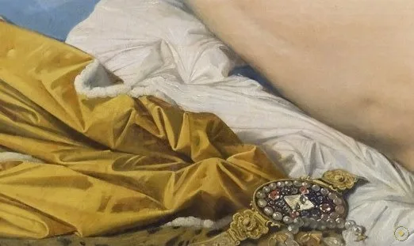
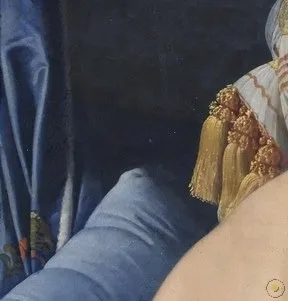
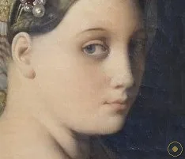

本页面展示的画作包含 艺术人体 / 裸体 内容。所录作品均为美术馆级公有领域馆藏，仅作艺术欣赏与学习之用，不含任何低俗或违规意图。
若您未满 18 周岁，或对此类内容感到不适，请点击「返回画廊」。点击「进入欣赏」即表示您已知悉上述说明，并同意仅作艺术欣赏之用。
1814 年，34 岁的安格尔在罗马画下一具横陈的裸身。她头戴土耳其头巾、手执孔雀羽扇，回眸望向画外。可当这幅画九年后回到巴黎，批评家们几乎笑出了声——因为这条优美的脊背，根本不可能长在任何人身上。
她被称为「宫女」（odalisque），是伊斯兰后宫里的侍妾。但安格尔从未来到过东方：画里的一切，都是一个西方人关于「异域寝宫」的想象。
1819 年沙龙上，这幅画遭到猛烈嘲笑。人们说画中没有骨头、没有肌肉，只有「一条没有尽头的脊背」——解剖学在这里彻底让位于一条理想的曲线。
两百年后，这条曲线成了安格尔的勋章。我们这一页，就沿着脊背、回眸与那支长烟斗，重新看一遍这场关于「美」与「真实」的争执。
—— 据 1819 年沙龙评论与后世研究转述
安格尔画下的，是一个宁愿背叛解剖学、也要成全线条的梦。
画中几乎没有一个细节经得起尺子与解剖图的推敲——而这恰恰是安格尔最固执的地方。点击光点，看看这条脊背、这双小脚，与那支长烟斗，各自藏着什么。

点击画面中的 ✦ 光点 查看画中细节 · 图片来源：Wikimedia Commons（公有领域）
从那不勒斯王后的委托，到罗马画室的完成，再到巴黎沙龙的嘲笑——这幅画的命运，被三个年份切成了三段。
1813 · 那不勒斯
委托来自卡罗琳·缪拉（Caroline Murat）——拿破仑的妹妹、那不勒斯王后。她为装点宫殿而订购这幅「东方宫女」，安格尔其时正以法国罗马大奖得主的身份居留在罗马。
➤1814 · 罗马画室
画作于罗马的法国学院（ Villa Medici ）画室完成。此时的安格尔是达维德的弟子，满脑子拉斐尔与古代雕刻；卧姿则明显承自威尼斯画派的「横卧维纳斯」传统。
➤1819 · 巴黎沙龙
五年后送展巴黎沙龙，因解剖「失真」遭猛烈讥讽；直到十九世纪末声誉才翻转，1899 年入藏卢浮宫，与《大宫女》之名一同成为新古典—浪漫转折的标志。

其一 · 多出的椎骨。2004 年《皇家医学会杂志》一篇短文以戏谑口吻指出，要让画中躯体物理成立，脊柱需多出约三节椎骨，左臂偏长、骨盆错位——这是学界最爱引用的一个「解剖玩笑」，点名了安格尔对线条的偏执。
其二 · 从未东行的东方主义。安格尔一生未踏足奥斯曼帝国；头巾、羽扇、长烟斗与「宫女」身份，皆来自欧洲的版画与旅行文学。这是幻想，不是民族志。
其三 · 沙龙的翻案。1819 年批评家讥其「没有骨头、没有肌肉」；然而德拉克洛瓦与后世现代主义画家却奉安格尔的线为圭臬，评价在百年间彻底逆转。
※「三节椎骨」出自 2004 年 JRSM 短文的估算，属广为流传的学术趣谈而非精密测量；头巾羽扇等物为东方主义视觉符号，非写实记录。
把这幅画拆开看，几乎每件「道具」都在替同一个念头服务：美可以大于真实。

白色 turban 与顶端羽饰，是「宫女」最醒目的东方标签。

孔雀羽扇与 chibouk，成套出现的异域奢华符号。
一条被拉长的脊背，新古典「线至上」的极端宣言。

腰胯的错位，让医学家也忍不住写上一篇短文。

纤巧的小脚，遥遥呼应帕尔米贾尼诺的《长颈圣母》。

卧榻把她接进长达五百年的「横卧维纳斯」谱系。

一道暗布，把最亮的肌肤托成被聚光照亮的主体。

越过肩膀的对视，是全画最私密也最主动的一刻。
作为达维德的学生，安格尔把新古典主义推到极端：轮廓线高于一切，色彩与光影退居其次。他留下名言「素描是艺术的诚实」——可大宫女却用一条不诚实的线，反过来定义了「美」。
画里的「东方」并非实地观察，而是十九世纪欧洲对奥斯曼后宫的集体幻想。这类图像后来被萨义德《东方学》纳入批判：它再现的，是观看者的欲望，而非被观看者的真实。
沙龙批评者以解剖学为刀，讥讽其失真；可时间站到了安格尔这边。当「写实」不再是唯一标准，那条延长的线反而成了超越时代的优雅。
从威尼斯「横卧维纳斯」到安格尔的宫女，再到马蒂斯、毕加索对安格尔线条的景仰——这条光滑、克制、近乎冷酷的轮廓，串起了现代艺术对「古典之线」的再发现。
受那不勒斯王后卡罗琳·缪拉委托，为装饰宫殿而画；安格尔时在罗马。
于罗马法国学院画室完成，承「横卧维纳斯」之脉，又注入东方主义想象。
巴黎沙龙展出，因解剖「失真」遭猛烈嘲笑，声誉跌入谷底。
由卢浮宫收藏，评价逆转，被奉为新古典—浪漫主义转折的杰作。
与《宫女与女奴》《土耳其浴室》一道，成为东方主义绘画与现代线条崇拜的共同源头。